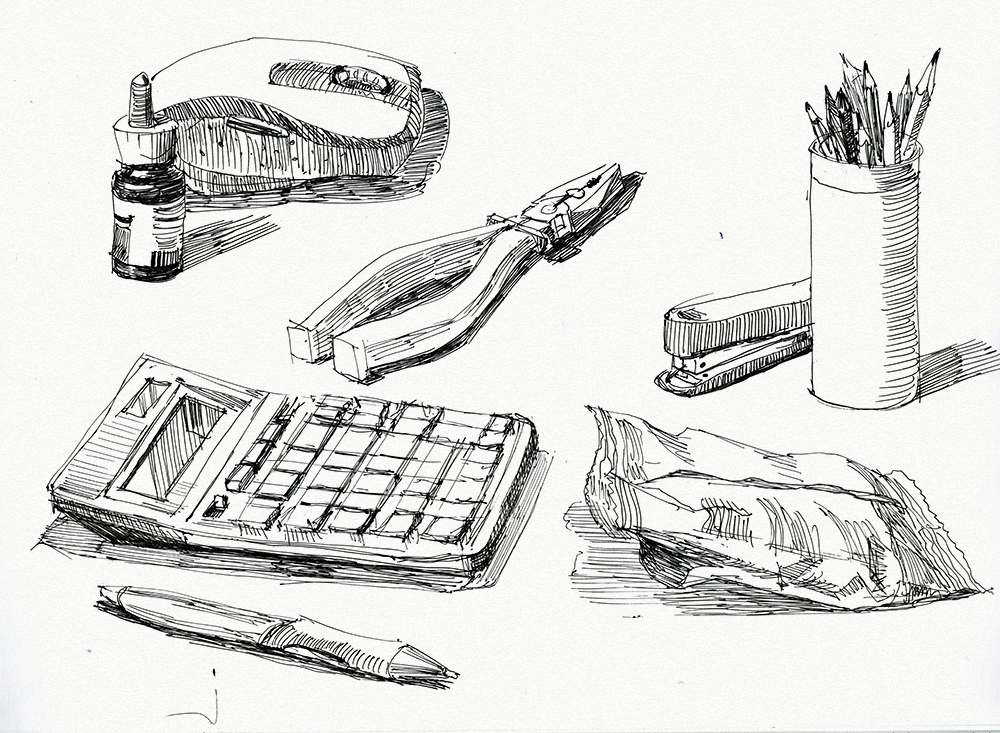

Просто следуйте правилу шаг за шагом и посвящайте практике достаточное количество времени, и вы сможете перейти от этого уровня рисования
Рисование – стиль жизни…
Было доказано, что рисование не только удовлетворяет потребности индивида в выражении своих идей и внутреннего мира, но и полезно для здоровья. Ученые обнаружили, что изобразительное искусство уменьшает стресс и тревогу, способствует активизации мыслительных процессов, улучшая восприятие и усвоение новой информации. Кроме того, рисование позволяет налаживать настроение, решать проблемы. Существует точка зрения, что в сложной ситуации надо нарисовать свои проблемы и они покажутся не такими значимыми и глобальными, и Вы легко сможете их решить
Шаг 1. Изучаем простые формы
Во-первых, возьмите бумагу и карандаш (или ручку), сядьте в удобное положение, очистите свой разум от мыслей и просто сосредоточьтесь на задаче.
Теперь попробуйте создать простую форму. Например, нарисуйте круг, а затем продолжайте практиковать его.
Каждый раз пытайтесь нарисовать идеальный круг. Если вы действительно отнесетесь к этому заданию серьезно, то оно может занять у нас несколько дней или даже месяцев. Нарисовать ровный круг, используя только ваши руки, сложнее, чем вы себе представляете.
Просто начните рисовать круги и продолжайте практиковать эти круги, пока не достигнете этапа, на котором вы сможете нарисовать идеальный круг, не используя никаких вспомогательных инструментов.
Ваши попытки начнутся с чего-то вроде этого:
После регулярных тренировок ваша координация рук и глаз улучшится, и вы начнете рисовать уже лучше:
Это довольно хороший результат. Теперь двигайтесь дальше!
Аналогичным образом, начните работать с другими базовыми фигурами, например треугольник, квадрат, ромб.
Это должно снова занять у вас некоторое время. Помните, что это важная задача.
Шаг 2. Тени и затенения
Теперь, когда вы знаете, как рисовать простые формы в совершенстве, давайте начнем затенять эти формы.
Итак, ваша первая попытка затенения круга, не понимая как это делать правильно, выглядела бы примерно так:
Обратите внимание, несмотря на то, что ваше изображение получилось не слишком реалистичным, вы уже подсознательно знали о воображаемом источнике света и поместили его в верхний левый угол и, учитывая этот источник , вы нарисовали тень на противоположной стороне в нижнем правом углу.

Теперь продолжайте практиковать затенения. Это может занять несколько месяцев, прежде чем у вас получится что-то вроде этого:
Теперь этот круг выглядит как объемная сфера.
Дальше вам необходимо показать, что сфера не болтается в воздухе, а находится на какой-то поверхности, и вы начнете изображать тени, которые предмет отбрасывает на другие поверхности. В этом случае рисунок уже должен выглядеть примерно так:
Всегда помните одно простое правило
Кроме того, продолжайте практиковать затемнение и других форм, которые были выше сказаны.
Во время практики обратите внимание на то, как оттенки варьируются в зависимости от наличия света.
Посмотрите на тональную шкалу со штриховкой от светлого к темному ниже. Вы можете ориентироваться на нее, когда рисуете фигуру.
Продолжай практиковаться.Как говорится "Терпение и труд, всё перетрут"
Шаг 3. Перспектива
Перед тем как продолжить изучать материал дальше я вам расскажу основной закон перспективы.
Основной закон перспективы гласит: когда объект находится ближе, он выглядит больше и если его нужно показать дальше, его нужно будет нарисовать меньше. Если вы это понимаете, вы понимаете основной закон перспективы.
Теперь давайте разберемся с так называемой точкой схода.
Я объясню это понятие на примере куба.
Когда мы рисуем куб, почему длина и ширина этого куба сужаются к его концу или наклонены внутрь бумаги? Посмотрите на эту картинку ниже для справки и спросите себя, почему это происходит?
Как вы можете видеть, ребра сужаются как вправо, так и влево, как будто они идут во внутрь листа бумаги. Именно это создает кубу иллюзию «3D» на двумерной бумаге. И это возможно, исходя из основ построения перспективы и такого понятия, как точка схода.
Теперь рассмотрим тот же самый куб еще раз.
В кубе мы взяли точку схода где-то далеко от наших глаз справа и слева от куба. Вот почему стороны сузились к внутренней стороне бумаги справа и слева. На рисунке ниже наглядно показано, как ребра куба, если их продлить, сойдутся в одной точке с обеих сторон. Эти две точки называются точками схода:
Теперь посмотрите на зеленую точку на следующем рисунке куба:
Эта зеленая точка также является точкой схода
Представьте себе, как будет выглядеть куб без этой концепции точки схода. Он будет больше похоже на квадрат в 2-D. Когда мы рисуем куб, то всегда следует помнить о точке схода, поскольку именно она дает нам возможность изобразить объемную фигуру.
Итак, я надеюсь, что концепция точки схода стала вам более понятна, так как для любого хорошего рисунка, который рисуется с учетом пространства и расстояния между каждым объектом, концепция точки схода должна соблюдаться по умолчанию.
Вот еще несколько примеров концепции точки схода, для вашего понимания.
Линейная перспектива (пейзаж):
Таким образом, как изображено на третьем примере, в реальных сценах обычно существует несколько точек схода, и эти точки придают рисунку желаемую глубину или 3-D эффект, и ощущение пространства, которое отделяет его от 2-D .
Слишком сложно? Просто не паникуй сейчас, хорошо? На этой стадии достаточно только понимать концепцию точки схода. Просто постарайтесь показать точку схода на своих рисунках без всяких чертежей и измерений.
Шаг 4. Рисуем сложные формы
Теперь используя свою уверенность в рисовании и затенении простых форм, а также знания эффекта тени и точки схода, переходите к следующем уровню, то есть к рисованию различных сложных форм.
Итак, для начала, как насчет груши? Она не так уж сильно отличается от круга, да? Давайте просто начнем. Практикуйтесь, пока не достигните совершенства!
Хорошо, это похоже на грушу. Теперь попробуйте другие фрукты. Например, клубнику.
Отлично! Это действительно хорошая клубника. И посмотрите на эту детализацию. Клубника на последнем рисунке выглядит достаточно сложной для рисования, но у нас уже есть опыт в затенении из “шага 3”. Это тоже самое, только на микроуровне. Поверьте в себя и всё получится!
Аналогичным образом, продолжайте рисовать разные случайные формы с затенением. Поместите тени на эти рисунки, учитывая такие эффекты, как отражение, преломление, прозрачность и т. д. И просто продолжайте практиковаться.
Вокруг существуют множество различных предметов. Научитесь рисовать то, что видите. Это один из самых важных шагов, чтобы стать професиональным художником. Не переживайте, если сначала у вас будет не очень хорошо получаться. Иногда, когда вы начинаете рисовать то, что видите, начало эскиза может выглядеть довольно ужасно, но итог может получиться потрясающим. Так начните делать это!
Попробуйте рисовать два случайных объекта в день. Рисунок должен быть цельным: рисование + затенение + падающая тень + любой другой специальный эффект.
Что-то вроде того, что показано ниже:

Каждый день просто повторяйте этот процесс. Вы на верном пути!
Шаг 5. Рисуем живых существ
Поскольку мы теперь знаем, как рисовать и затенять различные объекты с относительной точностью, пришло время рисовать движущиеся объекты и живые организмы. Теперь необходимо включать в рисунок движения объектов, их позу и выражения лица, это настоящий вызов!
Так что наблюдайте все нюансы — прогулку людей, полет птицы, позу собаки и т. д. И, когда это возможно, создавайте быстрый скетч этой конкретной позиции, движения, выражения и т. д. А над деталями работайте уже позже в свое свободное время.
У вас должно получаться что-то подобное:
Это быстрый скетч, который выполняется за считанные минуты. Выберитесь в парк или кафе и просто зарисовывайте попавшихся вам людей. В данном случае главное не качество, а количество. Вам нужно увидеть и передать позу объекта.
Затем попробуйте быстро нарисовать несколько разных выражений лица:
Наблюдайте и запоминайте различия лицевых линий. Позже, продолжайте добавлять тени и заставьте их выглядеть еще более реалистичным.
То же самое проделайте с деревьями, цветами, животными, птицами и т. п.

Теперь, когда вы уже знаете довольно много, пользуясь вашими полученными навыками вы сможете нарисовать что-то вроде этого:
Упорство, трудности и боль затем приведут в идеал
Итак, в основном, на этом этапе вы все время должны окружать себя этими сложностями, чтобы двигаться вперед, а не застревать на среднем уровне. Никто не поможет вам в этом, кроме вас самих!
Шаг 6. Пробуем разные инструменты и материалы
Очень хорошо, если вы умеете рисовать карандашом, но будет намного интереснее и полезнее, если вы также научитесь использовать чернила, краски, маркеры, пастель и т.д. Вам стоит попробовать разные материалы, хотя бы потому что вы можете столкнуться с тем, что вам особенно понравится. Добавьте цвета вашим эскизам!
Конечно, художественные товары сейчас стоят недешево, поэтому не стоит брать сразу профессиональные материалы, вдруг они вам придутся не по душе и захочется чего-то другого? Для начала будет достаточно инструментов из средней ценовой категории.
Не используйте модные художественные доски. Купите большой блокнот или альбом с белыми листами. Ваша цель — сделать как можно больше и быстрее набросков, не беспокоясь о том, чтобы тратить дорогостоящую бумагу.
Шаг 7. Рисуем из воображения
Начните с чего-то простого, например, с яблока. Просто переместите свой карандаш на бумагу, только представляя, что вы рисуете яблоко, прежде чем рисовать его. Затем сделайте быстрый предварительный эскиз, чтобы получить его форму и форму ее тени пропорционально странице. Затем начните затенение и детализацию.
После попробуйте нарисовать что-то посложнее, например, цветы, деревья, стакан, ручку и т.п. Каждый раз старайтесь выбирать объекты посложнееШаг 8. Формируем свой стиль
Теперь вы обо всем знаете. По крайней мере, достаточно, чтобы начать развивать свой собственный художественный стиль. Ваш стиль должен стать уникальным, и вы должны продолжать развивать его с усиленной практикой.
Обратите внимание, что я больше ничего не могу добавить к этому шагу, потому что я не знаю каким будет ваш собственный уникальный стиль
В Интернете полно материалов, которые помогут вам с вдохновением и идеями, например: Instagram,You Tube, тотже TikTok.
Я рекомендую проверять эти источники регулярно, изучать разные стили и практиковать тот стиль, который вам больше всего подходит.
Шаг 9. Совершенствуемся
Этот шаг о совершенствовании до уровня, где ваш рисунок будет неотличим от фотографии или реального изображения. Конечно, он необязательный. Но если вы все же желаете довести свое мастерство до рисования в стиле гиперреализма, это также потребует много практики.
Хотя рисунки, которые не отличить от фотографии, являются признаками удивительного мастерства авторов, которые приложили много усилий, есть равные примеры потрясающих работ, которые не похожи на фотографии. Поэтому вы также должны помнить об этом.
Вот пример гиперреалистичного рисунка:
Шаг 10. Практика, практика, практика.
Художественные навыки не приходят с причудливыми эскизами и карандашами. Это происходит с практикой. Считается, для того, чтобы стать профессионалом своего дела, необходимо посвятить ему определенное количество времени — от 2000 до 10000 часов!
Всякий раз, когда у вас есть свободное время, садитесь и рисуйте что-нибудь, или тренируйте свою штриховку, тон и т. д. Есть так много вещей, которые требуется освоить — вам всегда нужно практиковаться. Рисуйте легкие предметы и сложные. Рисуйте людей в деталях или грубых линиях. Осваивайте все, насколько сможете, постоянно совершенствуйте свое мастерство.
Причем желательно, чтобы практика сопровождалась обратной связью. Только обязательно, чтобы эти зрители говорили вам правду, поэтому папа с мамой на эту роль не подходят. Как вариант, можно выкладывать свои работы в каком-нибудь арт-сообществе, или форуме.